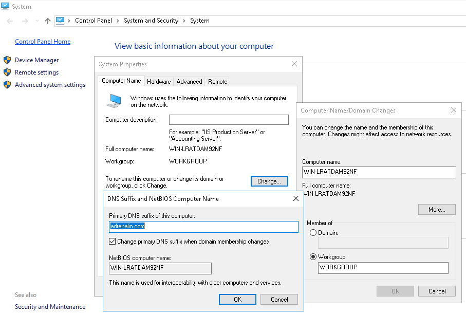
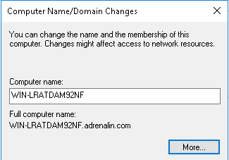
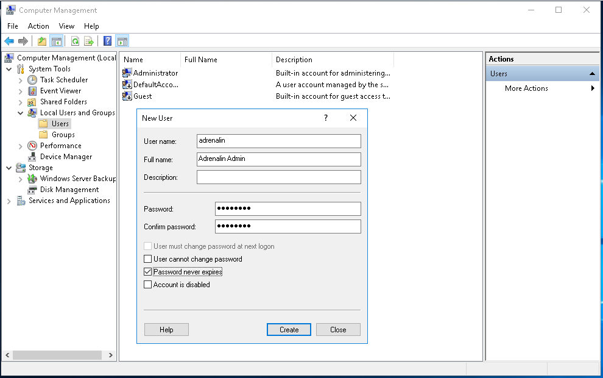
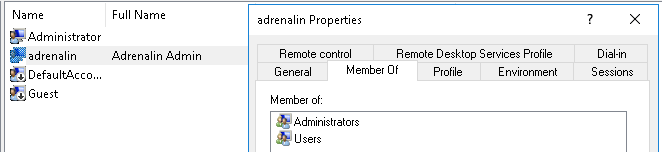
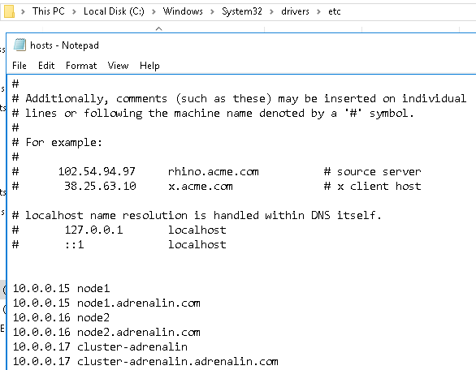

| Domain Independent Availability Group |
Overview
There are several combinations you can have in this configuration. You can have nodes that are not part of a domain at all, or some that are, or some that are joined to completely different domains.
- Setup primary DNS.
- Create a local user with the same name and password on each node.
- Change the service account of SQL Server service and SQL Server Agent service.
- Set the LocalAccountTokenFilterPolicy.
- Add all the IP Addresses involved in the host file.
- Reboot the server.
- Configure the cluster.
- Create Master Key.
- Create certificate.
- Create database mirroring endpoint authenticated by the certificate.
- Back up the certificate to a common network share.
- Create Database Login.
- Create AG as usual.
Configuring Server
Proceeding below steps assumes all prerequisites are implemented.
- Make sure the machine has a primary DNS Suffix. This should not be required on domain joined machines since the domain name is automatically set as the PDS.
- Create a local user with the same name and password on each node. The account is required to be in the local Adminstrators group
- Change the service account of SQL Server service and SQL Server Agent service into the created local user on both nodes.
- Set the LocalAccountTokenFilterPolicy in the registry since we are not using a built-in account.
- Add all the IP Addresses involved in the host file to avoid issues.
- Reboot the server.
- Configure the cluster.
# PowerShell $DNSSuffix = "adrenalin.com" Set-ItemProperty "HKLM:\SYSTEM\CurrentControlSet\Services\Tcpip\Parameters\" -Name Domain -Value $DNSSuffix Set-ItemProperty "HKLM:\SYSTEM\CurrentControlSet\Services\Tcpip\Parameters\" -Name "NV Domain" -Value $DNSSuffix


# PowerShell $Password = Read-Host -AsSecureString New-LocalUser "WSFC" -Password $Password -FullName "WSFC" -Description "Used for Domain Independent Cluster" -PasswordNeverExpires -UserMayNotChangePassword Add-LocalGroupMember -Group "Users" -Member "WSFC" Add-LocalGroupMember -Group "Administrators" -Member "WSFC"


#PowerShell new-itemproperty -path HKLM:\SOFTWARE\Microsoft\Windows\CurrentVersion\Policies\System -Name LocalAccountTokenFilterPolicy -Value 1

#PowerShell Restart-Computer -ComputerName $env:computername -Force
#Powershell # Validate Clusters test-cluster -node "PC-NODE7.adrenalin.com", "PC-NODE8.adrenalin.com" # Create 2-node cluster New-Cluster –Name AdrenalinCluster -Node "PC-NODE7", "PC-NODE8" -AdministrativeAccessPoint DNS -StaticAddress 10.0.0.15 -NoStorage -IgnoreNetwork 192.168.1.0/24
Configuring SQL Server
- Create Master Key to encrypt the certificate.
- Create certificate to authenticate the endpoint.
- Create database mirroring endpoint authenticated by the certificate.
- Back up the certificate to a common network share for import into other nodes in the cluster. Verify that you have write permissions, that the file path is valid, and that the file does not already exist.
- Create Database Login.
- Proceed with the standard configuration of Always On AG. Or use below script.
USE [master];
DECLARE
@Password SYSNAME,
@DynamicSQL VARCHAR(1000);
SET @Password = 'P@ssw0rd';
IF NOT EXISTS (SELECT 1 FROM sys.databases WHERE [name] = 'master' AND is_master_key_encrypted_by_server = 1)
BEGIN
SET @DynamicSQL = CONCAT('CREATE MASTER KEY ENCRYPTION BY PASSWORD = ' , QUOTENAME(@Password, ''''));
EXEC (@DynamicSQL);
PRINT @DynamicSQL;
END
ELSE
PRINT 'Master Key already exists';
DECLARE
@MachineName VARCHAR(250),
@DynamicSQL VARCHAR(1000);
SET @MachineName = CONVERT(SYSNAME, SERVERPROPERTY('MachineName'));
IF NOT EXISTS (SELECT 1 FROM sys.certificates WHERE [name] = @MachineName + '-Cert')
BEGIN
SET @DynamicSQL = CONCAT('CREATE CERTIFICATE ', QUOTENAME(@MachineName + '-Cert'), ' WITH SUBJECT = ', QUOTENAME(@MachineName, '''')) ;
PRINT @DynamicSQL;
EXEC (@DynamicSQL);
END
ELSE
PRINT 'Certificate ' + @MachineName + '-Cert already exists';
DECLARE
@MachineName VARCHAR(250),
@Endpoint VARCHAR(100),
@Port SMALLINT,
@DynamicSQL VARCHAR(1000);
SET @MachineName = CONVERT(SYSNAME, SERVERPROPERTY('MachineName'));
SET @Endpoint = 'AlwaysOn_EP';
SET @Port = 5022;
SET @DynamicSQL = CONCAT('
CREATE ENDPOINT ' + @Endpoint + '
STATE = STARTED AS
TCP (LISTENER_PORT = 5022, LISTENER_IP = ALL)
FOR DATABASE_MIRRORING (
AUTHENTICATION = CERTIFICATE ',
QUOTENAME(@MachineName + '-Cert'), ' ,
ENCRYPTION = REQUIRED ALGORITHM AES,
ROLE = ALL)');
IF NOT EXISTS (SELECT 1 FROM sys.tcp_endpoints WHERE [name] = @Endpoint OR port = @Port)
BEGIN
EXEC (@DynamicSQL);
PRINT @DynamicSQL;
END
ELSE
PRINT 'Endpoint already exists';
DECLARE
@DynamicSQL VARCHAR(1000),
@MachineName VARCHAR(250),
@ShareName SYSNAME;
SET @ShareName = '\\NODE1\Certificate';
SET @MachineName = CONVERT(SYSNAME, SERVERPROPERTY('MachineName'));
SET @DynamicSQL = CONCAT('
BACKUP CERTIFICATE ', QUOTENAME(@MachineName + '-Cert'),
' TO FILE = ', QUOTENAME( @ShareName + '\SQL-' + @MachineName + '.cer', ''''));
EXEC (@DynamicSQL);
PRINT @DynamicSQL;
USE [master]
DECLARE
@NodeA VARCHAR(250),
@NodeB SYSNAME,
@DBName SYSNAME,
@ShareName SYSNAME,
@StrongPassword SYSNAME,
@DynamicSQL VARCHAR(1000);
SET @NodeA = CONVERT(SysName, SERVERPROPERTY('MachineName'));
SET @NodeB = 'NODE2';
SET @StrongPassword = 'P@ssw0rd';
SET @ShareName = '\\NODE1\Certificate';
IF (@NodeA <> @NodeB)
BEGIN
IF NOT EXISTS (SELECT 1 FROM sys.syslogins WHERE [name] = @NodeB + '-Login')
BEGIN
SET @DynamicSQL = CONCAT('CREATE LOGIN ', QUOTENAME (@NodeB + '-Login'), ' WITH PASSWORD= ', QUOTENAME( @StrongPassword, ''''));
EXEC (@DynamicSQL);
PRINT @DynamicSQL;
END
ELSE
BEGIN PRINT 'Login already exists' END
IF NOT EXISTS (SELECT 1 FROM sys.database_principals WHERE name = @NodeB + '-User')
BEGIN
SET @DynamicSQL = CONCAT('CREATE USER ', QUOTENAME(@NodeB + '-User'), ' FOR LOGIN ', QUOTENAME(@NodeB + '-Login'));
EXEC (@DynamicSQL);
PRINT @DynamicSQL;
END
ELSE
BEGIN PRINT 'User already exists' END
IF NOT EXISTS(SELECT 1 FROM sys.certificates WHERE [name] = @NodeB + '-Cert')
BEGIN
SET @DynamicSQL = CONCAT('CREATE CERTIFICATE ', QUOTENAME(@NodeB +'-Cert'), ' AUTHORIZATION ', QUOTENAME(@NodeB +'-User'), ' FROM FILE = ', QUOTENAME(@ShareName + '\SQL-' + @NodeB + '.cer' , ''''));
EXEC (@DynamicSQL);
PRINT @DynamicSQL;
END
ELSE
BEGIN PRINT 'Certificate already exists' END
SET @DynamicSQL = CONCAT('GRANT CONNECT ON ENDPOINT::AlwaysON_EP TO ', QUOTENAME(@NodeB +'-Login'));
EXEC (@DynamicSQL);
PRINT @DynamicSQL;
END
ELSE
PRINT 'Does not need to create LOGINs for the local machine';
/* Author: Ryan Adams Website: https://www.ryanjadams.com Twitter: @ryanjadams This script must be executed in SQLCMD mode. This script was designed to setup an AlwaysOn Availability Group in a custom lab environment. Use at your own risk and DO NOT run this in production. Make sure you read and understand it thoroughly. */ /* First we connect to each replica in order and create logins for the account running the SQL Server Service on the other replicas Next we connect to each replica and create the endpoint. We also grant connect permission on the endpoint to all of the other replica service accounts. In a Domain Independent Cluster this must be done using certificates. Use the following scripts to do that. CreateEndpointCert.sql InstallEndpointCert.sql */ /* Here we connect to each replica and ensure that the AlwaysOn extended events session is set to run at startup and that it is also started */ :Connect DEMO2 IF EXISTS(SELECT * FROM sys.server_event_sessions WHERE name='AlwaysOn_health') BEGIN ALTER EVENT SESSION [AlwaysOn_health] ON SERVER WITH (STARTUP_STATE=ON); END IF NOT EXISTS(SELECT * FROM sys.dm_xe_sessions WHERE name='AlwaysOn_health') BEGIN ALTER EVENT SESSION [AlwaysOn_health] ON SERVER STATE=START; END GO :Connect SERVER1 -U MyAdmin -P NotGettingThisPassword IF EXISTS(SELECT * FROM sys.server_event_sessions WHERE name='AlwaysOn_health') BEGIN ALTER EVENT SESSION [AlwaysOn_health] ON SERVER WITH (STARTUP_STATE=ON); END IF NOT EXISTS(SELECT * FROM sys.dm_xe_sessions WHERE name='AlwaysOn_health') BEGIN ALTER EVENT SESSION [AlwaysOn_health] ON SERVER STATE=START; END GO /* There will be 1 database included in our AG and it currently exists on DEMO2. Prior to SQL 2016 we would have to do the following: Backup each database data file to a share and then restore it on each replica making sure to use the "NORECOVERY" clause Backup each database log file to a share and then restore it on each replica making sure to use the "NORECOVERY" clause With SQL 2016 we can use Direct Seeding instead. */ /* Here we connect to our primary replica (DEMO2) and create our AG. */ :Connect DEMO2 /* We can use trace flag 9567 to enable compression for the VDI backup for the seeding process */ DBCC TRACEON (9567, -1); GO USE [master]; GO CREATE AVAILABILITY GROUP [MyAG] WITH (AUTOMATED_BACKUP_PREFERENCE = SECONDARY, FAILURE_CONDITION_LEVEL = 3, HEALTH_CHECK_TIMEOUT = 30000, DB_FAILOVER = ON, DTC_SUPPORT = NONE) /* You can also use SECONDARY_ONLY, PRIMARY, or NONE for backup preference Failure condition levels are from the least restrcitive of 1(SQL Service is down) to 5(Exhaustion of worker threads). 3 is the default. Health check default is 30 seconds, represented in milliseconds. This is how long we wait for sp_server_diagnostics to return. */ FOR DATABASE [DomainIndependent] REPLICA ON N'DEMO2' WITH (ENDPOINT_URL = N'TCP://DEMO2.independent.com:5022', FAILOVER_MODE = AUTOMATIC, AVAILABILITY_MODE = SYNCHRONOUS_COMMIT, BACKUP_PRIORITY = 50, SECONDARY_ROLE(ALLOW_CONNECTIONS = Read_Only), SESSION_TIMEOUT = 10, SEEDING_MODE = AUTOMATIC), N'SERVER1' WITH (ENDPOINT_URL = N'TCP://SERVER1.americans.com:5022', FAILOVER_MODE = AUTOMATIC, AVAILABILITY_MODE = SYNCHRONOUS_COMMIT, BACKUP_PRIORITY = 60, SECONDARY_ROLE(ALLOW_CONNECTIONS = Read_Only), SESSION_TIMEOUT = 10, SEEDING_MODE = AUTOMATIC); GO /* Here we create a listener for our AG */ ALTER AVAILABILITY GROUP [MyAG] ADD LISTENER N'MyAG' ( WITH IP ((N'10.0.0.11', N'255.255.255.0')) , PORT=1433); GO /* Now that the AG exists we connect to each secondary replica and join it to the group We also have to grant the CREATE ANY DATABASE permission so Seeding can create the DBs */ :Connect SERVER1 -U MyAdmin -P NotGettingThisPassword ALTER AVAILABILITY GROUP [MyAG] JOIN; GO ALTER AVAILABILITY GROUP [MyAG] GRANT CREATE ANY DATABASE; GO /* This query let's us view the progress of the seeding operation SELECT start_time, ag.name, db.database_name, current_state, performed_seeding, failure_state, failure_state_desc FROM sys.dm_hadr_automatic_seeding autos JOIN sys.availability_databases_cluster db ON autos.ag_db_id = db.group_database_id JOIN sys.availability_groups ag ON autos.ag_id = ag.group_id; GO SELECT * FROM sys.dm_hadr_physical_seeding_stats; GO */ /* Prior to SQL 2016 we had to connect to each secondary replica and add our DBs to the group. With seeding we no longer have to do this as it is joined during the seeding process :Connect SERVER1 -U MyAdmin -P NotGettingThisPassword ALTER DATABASE [MyAG_DB1] SET HADR AVAILABILITY GROUP = [MyAG]; ALTER DATABASE [MyAG_DB2] SET HADR AVAILABILITY GROUP = [MyAG]; ALTER DATABASE [MyAG_DB3] SET HADR AVAILABILITY GROUP = [MyAG]; GO */ /* Now we need to turn our trace flag back off */ :Connect DEMO2 DBCC TRACEOFF (9567, -1); GO
Kudos to Ryan Adams